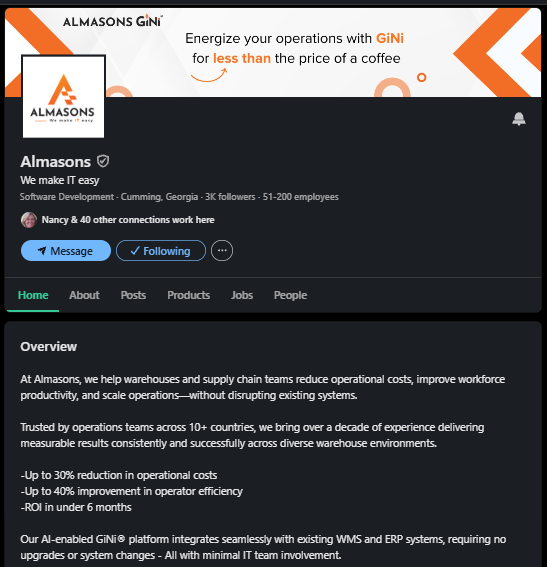
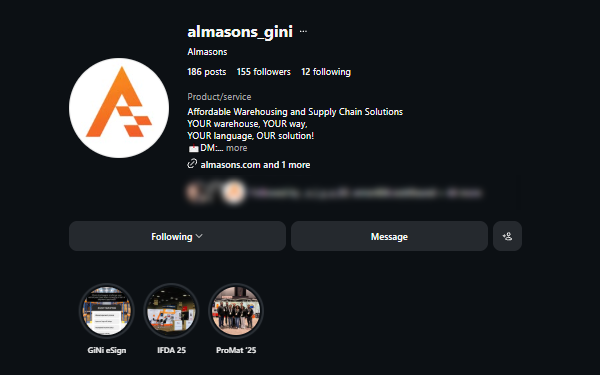
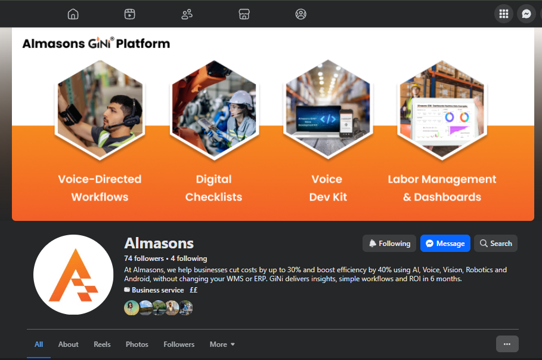
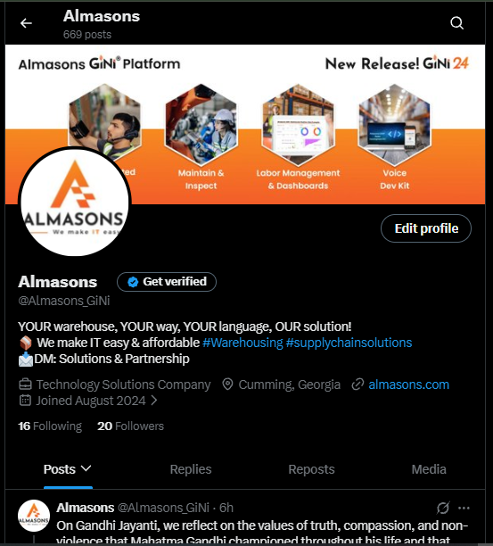
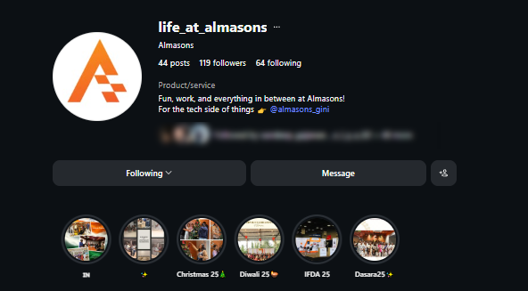
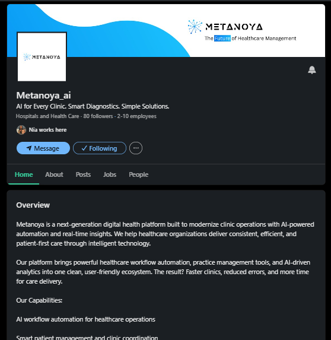
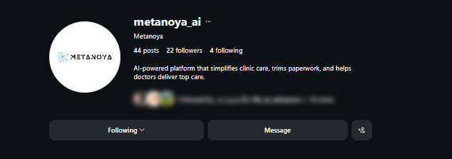
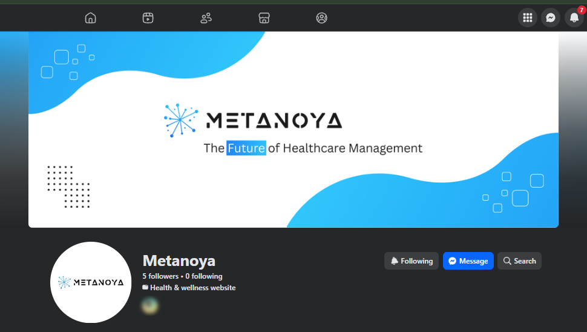
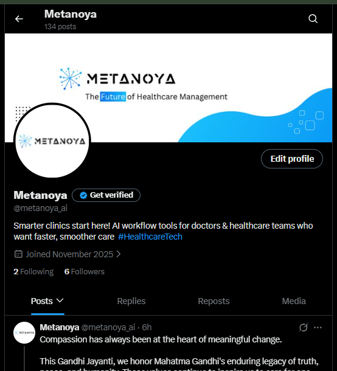

Write.
Copywriting · Creative writing · Website content · Campaign content
I work across content, social media, websites, campaigns, video and digital projects, bringing together creative thinking and marketing to turn ideas into things people can actually see, understand and engage with.
↓Copywriting · Creative writing · Website content · Campaign content
Social content · Creative concepts · Video · Visual storytelling
Website projects · Digital experiences · eLearning · Training content
Social growth · SEO · Analytics · Audience insights
Projects across digital marketing, content, creative campaigns, websites and learning experiences.

Led a website revamp from a small three-page site to a 35+ page digital presence, coordinating content, design, development and management.




Content planning, copywriting, creative coordination, publishing and performance tracking across LinkedIn, Instagram, Facebook, X and YouTube.

Contributed to 4–5 product training courses with multiple modules and instructional videos, using Guidde, H5P, Mindstamp and Moodle.

Marketing support for MODEX, ProMat and IFDA, including case studies, brochures, product collateral, promotional materials and video concepts.




Marketing and digital initiatives including website content, digital content and promotional video projects, coordinating with internal teams and external freelancers.
Visual experiments, AI image generation, prompt writing, video concepts and selected design work exploring new ways to communicate ideas.
Selected figures reflect work and outcomes during my time at Almasons.
Digital Marketing · Content Marketing · Social Media Marketing · Market Research · SEO · Website Optimization · Digital Analytics
Copywriting · Creative Writing · Storytelling · Content Ideation · Blog Writing · Website Content · Video Content
Project Ownership · Stakeholder Coordination · Cross-functional Collaboration · Junior Mentoring
GA4 · Google Search Console · Canva · Figma · Adobe Express · Guidde · H5P · Mindstamp · Moodle · AI Image Generation & Prompting
I started with content and social media. Over time, my work expanded into websites, SEO, campaigns, video, eLearning and cross-functional project ownership.
Today, I work as a Marketing Analyst at Almasons, where I take marketing initiatives from research and planning through execution while working with developers, designers, management, internal teams and external partners.
What I enjoy most is the space where creativity meets purpose: finding the right idea, shaping it into something clear and engaging, and figuring out how it can work for both the audience and the business.
I'm open to conversations around creative marketing, content, social media and broader digital marketing opportunities.
missbaa13@gmail.com ↗